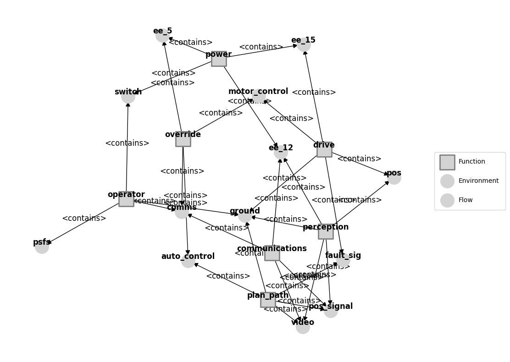
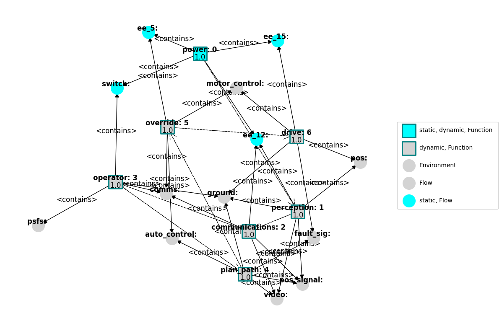
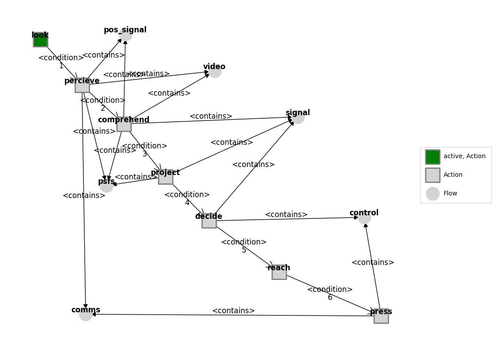
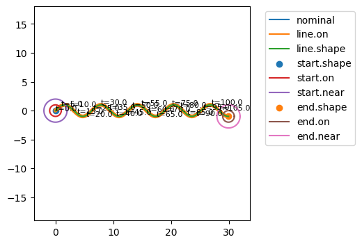
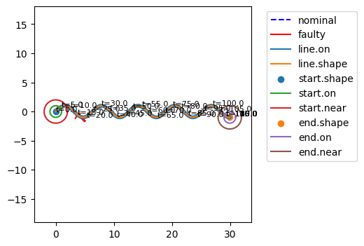
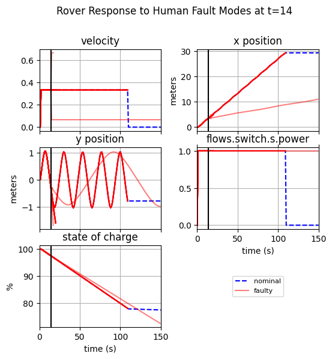
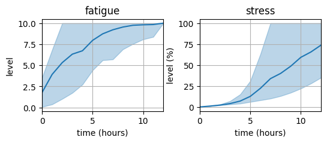
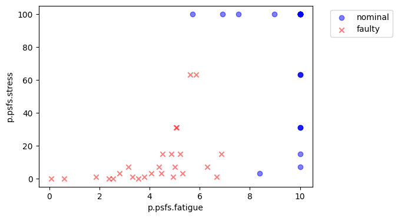
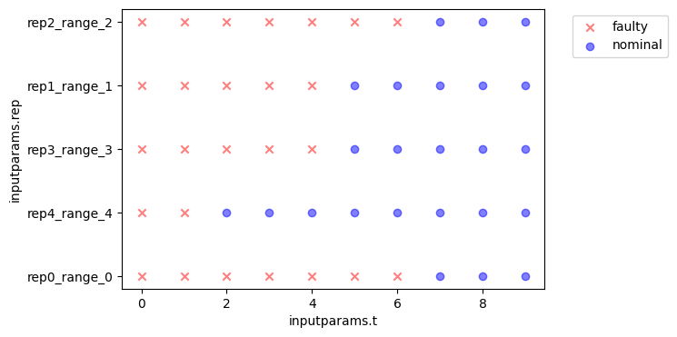
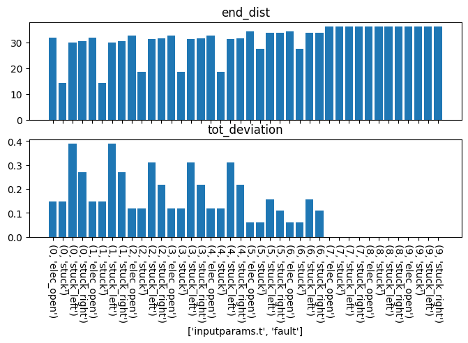

More Human Failure Analyses
[1]:
from fmdtools.sim.sample import ParameterDomain, ParameterSample, FaultDomain, FaultSample
import fmdtools.analyze as an
import fmdtools.sim.propagate as prop
import numpy as np
import matplotlib.pyplot as plt
plt.rcParams['pdf.fonttype'] = 42
import multiprocessing as mp
import scipy.stats as stats
import multiprocessing as mp
[2]:
from examples.rover.rover_model_human import RoverHuman, RoverHumanParam, asg_pos
from examples.rover.rover_model import plot_map
[3]:
mdl = RoverHuman()
g = an.graph.FunctionArchitectureGraph(mdl)
fig, ax = g.draw()

[4]:
g.set_exec_order(mdl)
fig, ax = g.draw()

[5]:
ag = an.graph.ActionArchitectureGraph(mdl.fxns['operator'].aa)
ag.set_pos(**asg_pos)
fig, ax = ag.draw()

[6]:
fig.savefig("action_graph.pdf", format="pdf", bbox_inches = 'tight', pad_inches = 0)
[7]:
mdl = RoverHuman(p={'linetype': 'sine', 'period': 10, 'amp': 3, 'drive_modes': {'mode_args':'manual'}})
er, hist = prop.nominal(mdl)
fig, ax = plot_map(mdl, hist)

[8]:
mdl.fxns['drive'].m.faultmodes
[8]:
{'elec_open': Fault(prob=0.25, cost=0.0, phases={'drive': 1.0, 'start': 1.0}, units='sim'),
'stuck': Fault(prob=0.25, cost=0.0, phases={'drive': 1.0, 'start': 1.0}, units='sim'),
'stuck_right': Fault(prob=0.25, cost=0.0, phases={'drive': 1.0, 'start': 1.0}, units='sim'),
'stuck_left': Fault(prob=0.25, cost=0.0, phases={'drive': 1.0, 'start': 1.0}, units='sim')}
[9]:
fd_hum = FaultDomain(mdl)
fd_hum.add_all_fxn_modes('operator')
fd_hum
[9]:
FaultDomain with faults:
-('operator', 'look_failed_no_action')
-('operator', 'percieve_failed_no_action')
-('operator', 'percieve_not_visible')
-('operator', 'percieve_wrong_position')
-('operator', 'comprehend_failed_no_action')
-('operator', 'project_failed_turn_left')
-('operator', 'project_failed_turn_right')
-('operator', 'project_failed_slow')
-('operator', 'project_failed_fast')
-('operator', 'project_failed_no_action')
-...more
[10]:
fs_hum = FaultSample(fd_hum)
fs_hum.add_fault_phases("start")
fs_hum
[10]:
FaultSample of scenarios:
- operator_look_failed_no_action_t15p0
- operator_percieve_failed_no_action_t15p0
- operator_percieve_not_visible_t15p0
- operator_percieve_wrong_position_t15p0
- operator_comprehend_failed_no_action_t15p0
- operator_project_failed_turn_left_t15p0
- operator_project_failed_turn_right_t15p0
- operator_project_failed_slow_t15p0
- operator_project_failed_fast_t15p0
- operator_project_failed_no_action_t15p0
- ... (19 total)
[11]:
fs_hum.scenarios()
[11]:
[SingleFaultScenario(sequence={15.0: Injection(faults={'operator': ['look_failed_no_action']}, disturbances={})}, times=(15.0,), function='operator', fault='look_failed_no_action', rate=1.0, name='operator_look_failed_no_action_t15p0', time=15.0, phase='start'),
SingleFaultScenario(sequence={15.0: Injection(faults={'operator': ['percieve_failed_no_action']}, disturbances={})}, times=(15.0,), function='operator', fault='percieve_failed_no_action', rate=0.3333333333333333, name='operator_percieve_failed_no_action_t15p0', time=15.0, phase='start'),
SingleFaultScenario(sequence={15.0: Injection(faults={'operator': ['percieve_not_visible']}, disturbances={})}, times=(15.0,), function='operator', fault='percieve_not_visible', rate=0.3333333333333333, name='operator_percieve_not_visible_t15p0', time=15.0, phase='start'),
SingleFaultScenario(sequence={15.0: Injection(faults={'operator': ['percieve_wrong_position']}, disturbances={})}, times=(15.0,), function='operator', fault='percieve_wrong_position', rate=0.3333333333333333, name='operator_percieve_wrong_position_t15p0', time=15.0, phase='start'),
SingleFaultScenario(sequence={15.0: Injection(faults={'operator': ['comprehend_failed_no_action']}, disturbances={})}, times=(15.0,), function='operator', fault='comprehend_failed_no_action', rate=1.0, name='operator_comprehend_failed_no_action_t15p0', time=15.0, phase='start'),
SingleFaultScenario(sequence={15.0: Injection(faults={'operator': ['project_failed_turn_left']}, disturbances={})}, times=(15.0,), function='operator', fault='project_failed_turn_left', rate=0.2, name='operator_project_failed_turn_left_t15p0', time=15.0, phase='start'),
SingleFaultScenario(sequence={15.0: Injection(faults={'operator': ['project_failed_turn_right']}, disturbances={})}, times=(15.0,), function='operator', fault='project_failed_turn_right', rate=0.2, name='operator_project_failed_turn_right_t15p0', time=15.0, phase='start'),
SingleFaultScenario(sequence={15.0: Injection(faults={'operator': ['project_failed_slow']}, disturbances={})}, times=(15.0,), function='operator', fault='project_failed_slow', rate=0.2, name='operator_project_failed_slow_t15p0', time=15.0, phase='start'),
SingleFaultScenario(sequence={15.0: Injection(faults={'operator': ['project_failed_fast']}, disturbances={})}, times=(15.0,), function='operator', fault='project_failed_fast', rate=0.2, name='operator_project_failed_fast_t15p0', time=15.0, phase='start'),
SingleFaultScenario(sequence={15.0: Injection(faults={'operator': ['project_failed_no_action']}, disturbances={})}, times=(15.0,), function='operator', fault='project_failed_no_action', rate=0.2, name='operator_project_failed_no_action_t15p0', time=15.0, phase='start'),
SingleFaultScenario(sequence={15.0: Injection(faults={'operator': ['decide_failed_turn_left']}, disturbances={})}, times=(15.0,), function='operator', fault='decide_failed_turn_left', rate=0.2, name='operator_decide_failed_turn_left_t15p0', time=15.0, phase='start'),
SingleFaultScenario(sequence={15.0: Injection(faults={'operator': ['decide_failed_turn_right']}, disturbances={})}, times=(15.0,), function='operator', fault='decide_failed_turn_right', rate=0.2, name='operator_decide_failed_turn_right_t15p0', time=15.0, phase='start'),
SingleFaultScenario(sequence={15.0: Injection(faults={'operator': ['decide_failed_slow']}, disturbances={})}, times=(15.0,), function='operator', fault='decide_failed_slow', rate=0.2, name='operator_decide_failed_slow_t15p0', time=15.0, phase='start'),
SingleFaultScenario(sequence={15.0: Injection(faults={'operator': ['decide_failed_fast']}, disturbances={})}, times=(15.0,), function='operator', fault='decide_failed_fast', rate=0.2, name='operator_decide_failed_fast_t15p0', time=15.0, phase='start'),
SingleFaultScenario(sequence={15.0: Injection(faults={'operator': ['decide_failed_no_action']}, disturbances={})}, times=(15.0,), function='operator', fault='decide_failed_no_action', rate=0.2, name='operator_decide_failed_no_action_t15p0', time=15.0, phase='start'),
SingleFaultScenario(sequence={15.0: Injection(faults={'operator': ['reach_failed_no_action']}, disturbances={})}, times=(15.0,), function='operator', fault='reach_failed_no_action', rate=1.0, name='operator_reach_failed_no_action_t15p0', time=15.0, phase='start'),
SingleFaultScenario(sequence={15.0: Injection(faults={'operator': ['press_failed_left']}, disturbances={})}, times=(15.0,), function='operator', fault='press_failed_left', rate=0.3333333333333333, name='operator_press_failed_left_t15p0', time=15.0, phase='start'),
SingleFaultScenario(sequence={15.0: Injection(faults={'operator': ['press_failed_right']}, disturbances={})}, times=(15.0,), function='operator', fault='press_failed_right', rate=0.3333333333333333, name='operator_press_failed_right_t15p0', time=15.0, phase='start'),
SingleFaultScenario(sequence={15.0: Injection(faults={'operator': ['press_no_press']}, disturbances={})}, times=(15.0,), function='operator', fault='press_no_press', rate=0.3333333333333333, name='operator_press_no_press_t15p0', time=15.0, phase='start')]
[12]:
ecs, hists = prop.fault_sample(mdl, fs_hum)
SCENARIOS COMPLETE: 100%|██████████| 19/19 [00:01<00:00, 9.69it/s]
[13]:
fig, ax = plot_map(mdl, hists)

[14]:
figs, axs = hists.plot_line('flows.pos.s.vel','flows.pos.s.x', 'flows.pos.s.y',
'flows.switch.s.power', 'fxns.power.s.charge', time_slice=[14],
title="Rover Response to Human Fault Modes at t=14",
indiv_kwargs={'faulty':{'alpha':0.5, 'color':'red'}},
ylabels={'flows.pos.s.x':'meters','flows.pos.s.y':'meters', 'flows.ground.s.x':'m/s',
'fxns.power.s.charge': '%'}, xlabel='time (s)',
titles={'flows.pos.s.x':'x position','flows.pos.s.y':'y position', 'flows.pos.s.vel':'velocity',
'flows.s.switch': 'on/off switch', 'fxns.power.s.charge': 'state of charge'}, h_padding=0.3)

[15]:
fig.savefig("rover_fault_behavior.pdf", format="pdf", bbox_inches = 'tight', pad_inches = 0)
[16]:
from examples.rover.rover_degradation import PSFDegradationShort, PSFShortParams
[17]:
pd_deg = ParameterDomain(PSFShortParams)
pd_deg.add_constant('stress_param', 0.0)
pd_deg.add_variable('experience', var_lim=(1.0, 5.0))
pd_deg(2,2)
[17]:
PSFShortParams(experience=2.0, stress_param=0.0, fatigue_param=1.0)
[18]:
ps_deg = ParameterSample(pd_deg)
ps_deg.add_variable_ranges(replicates = 10)
ps_deg.scenarios()
[18]:
[ParameterScenario(sequence={}, times=(), p={'experience': 1.0, 'stress_param': 0.0}, r={'seed': 1584886505}, sp={}, prob=0.02, inputparams={0: 1.0}, rangeid='', name='rep0_range_0'),
ParameterScenario(sequence={}, times=(), p={'experience': 1.0, 'stress_param': 0.0}, r={'seed': 2175594268}, sp={}, prob=0.02, inputparams={0: 1.0}, rangeid='', name='rep1_range_1'),
ParameterScenario(sequence={}, times=(), p={'experience': 1.0, 'stress_param': 0.0}, r={'seed': 2864323258}, sp={}, prob=0.02, inputparams={0: 1.0}, rangeid='', name='rep2_range_2'),
ParameterScenario(sequence={}, times=(), p={'experience': 1.0, 'stress_param': 0.0}, r={'seed': 1354936427}, sp={}, prob=0.02, inputparams={0: 1.0}, rangeid='', name='rep3_range_3'),
ParameterScenario(sequence={}, times=(), p={'experience': 1.0, 'stress_param': 0.0}, r={'seed': 3643907039}, sp={}, prob=0.02, inputparams={0: 1.0}, rangeid='', name='rep4_range_4'),
ParameterScenario(sequence={}, times=(), p={'experience': 1.0, 'stress_param': 0.0}, r={'seed': 2982422916}, sp={}, prob=0.02, inputparams={0: 1.0}, rangeid='', name='rep5_range_5'),
ParameterScenario(sequence={}, times=(), p={'experience': 1.0, 'stress_param': 0.0}, r={'seed': 1871821761}, sp={}, prob=0.02, inputparams={0: 1.0}, rangeid='', name='rep6_range_6'),
ParameterScenario(sequence={}, times=(), p={'experience': 1.0, 'stress_param': 0.0}, r={'seed': 1767137373}, sp={}, prob=0.02, inputparams={0: 1.0}, rangeid='', name='rep7_range_7'),
ParameterScenario(sequence={}, times=(), p={'experience': 1.0, 'stress_param': 0.0}, r={'seed': 1964054511}, sp={}, prob=0.02, inputparams={0: 1.0}, rangeid='', name='rep8_range_8'),
ParameterScenario(sequence={}, times=(), p={'experience': 1.0, 'stress_param': 0.0}, r={'seed': 2789886042}, sp={}, prob=0.02, inputparams={0: 1.0}, rangeid='', name='rep9_range_9'),
ParameterScenario(sequence={}, times=(), p={'experience': 2.0, 'stress_param': 0.0}, r={'seed': 1584886505}, sp={}, prob=0.02, inputparams={0: 2.0}, rangeid='', name='rep0_range_10'),
ParameterScenario(sequence={}, times=(), p={'experience': 2.0, 'stress_param': 0.0}, r={'seed': 2175594268}, sp={}, prob=0.02, inputparams={0: 2.0}, rangeid='', name='rep1_range_11'),
ParameterScenario(sequence={}, times=(), p={'experience': 2.0, 'stress_param': 0.0}, r={'seed': 2864323258}, sp={}, prob=0.02, inputparams={0: 2.0}, rangeid='', name='rep2_range_12'),
ParameterScenario(sequence={}, times=(), p={'experience': 2.0, 'stress_param': 0.0}, r={'seed': 1354936427}, sp={}, prob=0.02, inputparams={0: 2.0}, rangeid='', name='rep3_range_13'),
ParameterScenario(sequence={}, times=(), p={'experience': 2.0, 'stress_param': 0.0}, r={'seed': 3643907039}, sp={}, prob=0.02, inputparams={0: 2.0}, rangeid='', name='rep4_range_14'),
ParameterScenario(sequence={}, times=(), p={'experience': 2.0, 'stress_param': 0.0}, r={'seed': 2982422916}, sp={}, prob=0.02, inputparams={0: 2.0}, rangeid='', name='rep5_range_15'),
ParameterScenario(sequence={}, times=(), p={'experience': 2.0, 'stress_param': 0.0}, r={'seed': 1871821761}, sp={}, prob=0.02, inputparams={0: 2.0}, rangeid='', name='rep6_range_16'),
ParameterScenario(sequence={}, times=(), p={'experience': 2.0, 'stress_param': 0.0}, r={'seed': 1767137373}, sp={}, prob=0.02, inputparams={0: 2.0}, rangeid='', name='rep7_range_17'),
ParameterScenario(sequence={}, times=(), p={'experience': 2.0, 'stress_param': 0.0}, r={'seed': 1964054511}, sp={}, prob=0.02, inputparams={0: 2.0}, rangeid='', name='rep8_range_18'),
ParameterScenario(sequence={}, times=(), p={'experience': 2.0, 'stress_param': 0.0}, r={'seed': 2789886042}, sp={}, prob=0.02, inputparams={0: 2.0}, rangeid='', name='rep9_range_19'),
ParameterScenario(sequence={}, times=(), p={'experience': 3.0, 'stress_param': 0.0}, r={'seed': 1584886505}, sp={}, prob=0.02, inputparams={0: 3.0}, rangeid='', name='rep0_range_20'),
ParameterScenario(sequence={}, times=(), p={'experience': 3.0, 'stress_param': 0.0}, r={'seed': 2175594268}, sp={}, prob=0.02, inputparams={0: 3.0}, rangeid='', name='rep1_range_21'),
ParameterScenario(sequence={}, times=(), p={'experience': 3.0, 'stress_param': 0.0}, r={'seed': 2864323258}, sp={}, prob=0.02, inputparams={0: 3.0}, rangeid='', name='rep2_range_22'),
ParameterScenario(sequence={}, times=(), p={'experience': 3.0, 'stress_param': 0.0}, r={'seed': 1354936427}, sp={}, prob=0.02, inputparams={0: 3.0}, rangeid='', name='rep3_range_23'),
ParameterScenario(sequence={}, times=(), p={'experience': 3.0, 'stress_param': 0.0}, r={'seed': 3643907039}, sp={}, prob=0.02, inputparams={0: 3.0}, rangeid='', name='rep4_range_24'),
ParameterScenario(sequence={}, times=(), p={'experience': 3.0, 'stress_param': 0.0}, r={'seed': 2982422916}, sp={}, prob=0.02, inputparams={0: 3.0}, rangeid='', name='rep5_range_25'),
ParameterScenario(sequence={}, times=(), p={'experience': 3.0, 'stress_param': 0.0}, r={'seed': 1871821761}, sp={}, prob=0.02, inputparams={0: 3.0}, rangeid='', name='rep6_range_26'),
ParameterScenario(sequence={}, times=(), p={'experience': 3.0, 'stress_param': 0.0}, r={'seed': 1767137373}, sp={}, prob=0.02, inputparams={0: 3.0}, rangeid='', name='rep7_range_27'),
ParameterScenario(sequence={}, times=(), p={'experience': 3.0, 'stress_param': 0.0}, r={'seed': 1964054511}, sp={}, prob=0.02, inputparams={0: 3.0}, rangeid='', name='rep8_range_28'),
ParameterScenario(sequence={}, times=(), p={'experience': 3.0, 'stress_param': 0.0}, r={'seed': 2789886042}, sp={}, prob=0.02, inputparams={0: 3.0}, rangeid='', name='rep9_range_29'),
ParameterScenario(sequence={}, times=(), p={'experience': 4.0, 'stress_param': 0.0}, r={'seed': 1584886505}, sp={}, prob=0.02, inputparams={0: 4.0}, rangeid='', name='rep0_range_30'),
ParameterScenario(sequence={}, times=(), p={'experience': 4.0, 'stress_param': 0.0}, r={'seed': 2175594268}, sp={}, prob=0.02, inputparams={0: 4.0}, rangeid='', name='rep1_range_31'),
ParameterScenario(sequence={}, times=(), p={'experience': 4.0, 'stress_param': 0.0}, r={'seed': 2864323258}, sp={}, prob=0.02, inputparams={0: 4.0}, rangeid='', name='rep2_range_32'),
ParameterScenario(sequence={}, times=(), p={'experience': 4.0, 'stress_param': 0.0}, r={'seed': 1354936427}, sp={}, prob=0.02, inputparams={0: 4.0}, rangeid='', name='rep3_range_33'),
ParameterScenario(sequence={}, times=(), p={'experience': 4.0, 'stress_param': 0.0}, r={'seed': 3643907039}, sp={}, prob=0.02, inputparams={0: 4.0}, rangeid='', name='rep4_range_34'),
ParameterScenario(sequence={}, times=(), p={'experience': 4.0, 'stress_param': 0.0}, r={'seed': 2982422916}, sp={}, prob=0.02, inputparams={0: 4.0}, rangeid='', name='rep5_range_35'),
ParameterScenario(sequence={}, times=(), p={'experience': 4.0, 'stress_param': 0.0}, r={'seed': 1871821761}, sp={}, prob=0.02, inputparams={0: 4.0}, rangeid='', name='rep6_range_36'),
ParameterScenario(sequence={}, times=(), p={'experience': 4.0, 'stress_param': 0.0}, r={'seed': 1767137373}, sp={}, prob=0.02, inputparams={0: 4.0}, rangeid='', name='rep7_range_37'),
ParameterScenario(sequence={}, times=(), p={'experience': 4.0, 'stress_param': 0.0}, r={'seed': 1964054511}, sp={}, prob=0.02, inputparams={0: 4.0}, rangeid='', name='rep8_range_38'),
ParameterScenario(sequence={}, times=(), p={'experience': 4.0, 'stress_param': 0.0}, r={'seed': 2789886042}, sp={}, prob=0.02, inputparams={0: 4.0}, rangeid='', name='rep9_range_39'),
ParameterScenario(sequence={}, times=(), p={'experience': 5.0, 'stress_param': 0.0}, r={'seed': 1584886505}, sp={}, prob=0.02, inputparams={0: 5.0}, rangeid='', name='rep0_range_40'),
ParameterScenario(sequence={}, times=(), p={'experience': 5.0, 'stress_param': 0.0}, r={'seed': 2175594268}, sp={}, prob=0.02, inputparams={0: 5.0}, rangeid='', name='rep1_range_41'),
ParameterScenario(sequence={}, times=(), p={'experience': 5.0, 'stress_param': 0.0}, r={'seed': 2864323258}, sp={}, prob=0.02, inputparams={0: 5.0}, rangeid='', name='rep2_range_42'),
ParameterScenario(sequence={}, times=(), p={'experience': 5.0, 'stress_param': 0.0}, r={'seed': 1354936427}, sp={}, prob=0.02, inputparams={0: 5.0}, rangeid='', name='rep3_range_43'),
ParameterScenario(sequence={}, times=(), p={'experience': 5.0, 'stress_param': 0.0}, r={'seed': 3643907039}, sp={}, prob=0.02, inputparams={0: 5.0}, rangeid='', name='rep4_range_44'),
ParameterScenario(sequence={}, times=(), p={'experience': 5.0, 'stress_param': 0.0}, r={'seed': 2982422916}, sp={}, prob=0.02, inputparams={0: 5.0}, rangeid='', name='rep5_range_45'),
ParameterScenario(sequence={}, times=(), p={'experience': 5.0, 'stress_param': 0.0}, r={'seed': 1871821761}, sp={}, prob=0.02, inputparams={0: 5.0}, rangeid='', name='rep6_range_46'),
ParameterScenario(sequence={}, times=(), p={'experience': 5.0, 'stress_param': 0.0}, r={'seed': 1767137373}, sp={}, prob=0.02, inputparams={0: 5.0}, rangeid='', name='rep7_range_47'),
ParameterScenario(sequence={}, times=(), p={'experience': 5.0, 'stress_param': 0.0}, r={'seed': 1964054511}, sp={}, prob=0.02, inputparams={0: 5.0}, rangeid='', name='rep8_range_48'),
ParameterScenario(sequence={}, times=(), p={'experience': 5.0, 'stress_param': 0.0}, r={'seed': 2789886042}, sp={}, prob=0.02, inputparams={0: 5.0}, rangeid='', name='rep9_range_49')]
[19]:
deg_mdl = PSFDegradationShort()
ec_psf_short, hist_psf_short = prop.parameter_sample(deg_mdl, ps_deg, run_stochastic=True)
SCENARIOS COMPLETE: 100%|██████████| 50/50 [00:00<00:00, 556.57it/s]
[20]:
hist_psf_short.keys()
[20]:
dict_keys(['rep0_range_0.s.fatigue', 'rep0_range_0.s.stress', 'rep0_range_0.s.experience', 'rep0_range_0.r.s.fatigue_param', 'rep0_range_0.r.probdens', 'rep0_range_0.time', 'rep1_range_1.s.fatigue', 'rep1_range_1.s.stress', 'rep1_range_1.s.experience', 'rep1_range_1.r.s.fatigue_param', 'rep1_range_1.r.probdens', 'rep1_range_1.time', 'rep2_range_2.s.fatigue', 'rep2_range_2.s.stress', 'rep2_range_2.s.experience', 'rep2_range_2.r.s.fatigue_param', 'rep2_range_2.r.probdens', 'rep2_range_2.time', 'rep3_range_3.s.fatigue', 'rep3_range_3.s.stress', 'rep3_range_3.s.experience', 'rep3_range_3.r.s.fatigue_param', 'rep3_range_3.r.probdens', 'rep3_range_3.time', 'rep4_range_4.s.fatigue', 'rep4_range_4.s.stress', 'rep4_range_4.s.experience', 'rep4_range_4.r.s.fatigue_param', 'rep4_range_4.r.probdens', 'rep4_range_4.time', 'rep5_range_5.s.fatigue', 'rep5_range_5.s.stress', 'rep5_range_5.s.experience', 'rep5_range_5.r.s.fatigue_param', 'rep5_range_5.r.probdens', 'rep5_range_5.time', 'rep6_range_6.s.fatigue', 'rep6_range_6.s.stress', 'rep6_range_6.s.experience', 'rep6_range_6.r.s.fatigue_param', 'rep6_range_6.r.probdens', 'rep6_range_6.time', 'rep7_range_7.s.fatigue', 'rep7_range_7.s.stress', 'rep7_range_7.s.experience', 'rep7_range_7.r.s.fatigue_param', 'rep7_range_7.r.probdens', 'rep7_range_7.time', 'rep8_range_8.s.fatigue', 'rep8_range_8.s.stress', 'rep8_range_8.s.experience', 'rep8_range_8.r.s.fatigue_param', 'rep8_range_8.r.probdens', 'rep8_range_8.time', 'rep9_range_9.s.fatigue', 'rep9_range_9.s.stress', 'rep9_range_9.s.experience', 'rep9_range_9.r.s.fatigue_param', 'rep9_range_9.r.probdens', 'rep9_range_9.time', 'rep0_range_10.s.fatigue', 'rep0_range_10.s.stress', 'rep0_range_10.s.experience', 'rep0_range_10.r.s.fatigue_param', 'rep0_range_10.r.probdens', 'rep0_range_10.time', 'rep1_range_11.s.fatigue', 'rep1_range_11.s.stress', 'rep1_range_11.s.experience', 'rep1_range_11.r.s.fatigue_param', 'rep1_range_11.r.probdens', 'rep1_range_11.time', 'rep2_range_12.s.fatigue', 'rep2_range_12.s.stress', 'rep2_range_12.s.experience', 'rep2_range_12.r.s.fatigue_param', 'rep2_range_12.r.probdens', 'rep2_range_12.time', 'rep3_range_13.s.fatigue', 'rep3_range_13.s.stress', 'rep3_range_13.s.experience', 'rep3_range_13.r.s.fatigue_param', 'rep3_range_13.r.probdens', 'rep3_range_13.time', 'rep4_range_14.s.fatigue', 'rep4_range_14.s.stress', 'rep4_range_14.s.experience', 'rep4_range_14.r.s.fatigue_param', 'rep4_range_14.r.probdens', 'rep4_range_14.time', 'rep5_range_15.s.fatigue', 'rep5_range_15.s.stress', 'rep5_range_15.s.experience', 'rep5_range_15.r.s.fatigue_param', 'rep5_range_15.r.probdens', 'rep5_range_15.time', 'rep6_range_16.s.fatigue', 'rep6_range_16.s.stress', 'rep6_range_16.s.experience', 'rep6_range_16.r.s.fatigue_param', 'rep6_range_16.r.probdens', 'rep6_range_16.time', 'rep7_range_17.s.fatigue', 'rep7_range_17.s.stress', 'rep7_range_17.s.experience', 'rep7_range_17.r.s.fatigue_param', 'rep7_range_17.r.probdens', 'rep7_range_17.time', 'rep8_range_18.s.fatigue', 'rep8_range_18.s.stress', 'rep8_range_18.s.experience', 'rep8_range_18.r.s.fatigue_param', 'rep8_range_18.r.probdens', 'rep8_range_18.time', 'rep9_range_19.s.fatigue', 'rep9_range_19.s.stress', 'rep9_range_19.s.experience', 'rep9_range_19.r.s.fatigue_param', 'rep9_range_19.r.probdens', 'rep9_range_19.time', 'rep0_range_20.s.fatigue', 'rep0_range_20.s.stress', 'rep0_range_20.s.experience', 'rep0_range_20.r.s.fatigue_param', 'rep0_range_20.r.probdens', 'rep0_range_20.time', 'rep1_range_21.s.fatigue', 'rep1_range_21.s.stress', 'rep1_range_21.s.experience', 'rep1_range_21.r.s.fatigue_param', 'rep1_range_21.r.probdens', 'rep1_range_21.time', 'rep2_range_22.s.fatigue', 'rep2_range_22.s.stress', 'rep2_range_22.s.experience', 'rep2_range_22.r.s.fatigue_param', 'rep2_range_22.r.probdens', 'rep2_range_22.time', 'rep3_range_23.s.fatigue', 'rep3_range_23.s.stress', 'rep3_range_23.s.experience', 'rep3_range_23.r.s.fatigue_param', 'rep3_range_23.r.probdens', 'rep3_range_23.time', 'rep4_range_24.s.fatigue', 'rep4_range_24.s.stress', 'rep4_range_24.s.experience', 'rep4_range_24.r.s.fatigue_param', 'rep4_range_24.r.probdens', 'rep4_range_24.time', 'rep5_range_25.s.fatigue', 'rep5_range_25.s.stress', 'rep5_range_25.s.experience', 'rep5_range_25.r.s.fatigue_param', 'rep5_range_25.r.probdens', 'rep5_range_25.time', 'rep6_range_26.s.fatigue', 'rep6_range_26.s.stress', 'rep6_range_26.s.experience', 'rep6_range_26.r.s.fatigue_param', 'rep6_range_26.r.probdens', 'rep6_range_26.time', 'rep7_range_27.s.fatigue', 'rep7_range_27.s.stress', 'rep7_range_27.s.experience', 'rep7_range_27.r.s.fatigue_param', 'rep7_range_27.r.probdens', 'rep7_range_27.time', 'rep8_range_28.s.fatigue', 'rep8_range_28.s.stress', 'rep8_range_28.s.experience', 'rep8_range_28.r.s.fatigue_param', 'rep8_range_28.r.probdens', 'rep8_range_28.time', 'rep9_range_29.s.fatigue', 'rep9_range_29.s.stress', 'rep9_range_29.s.experience', 'rep9_range_29.r.s.fatigue_param', 'rep9_range_29.r.probdens', 'rep9_range_29.time', 'rep0_range_30.s.fatigue', 'rep0_range_30.s.stress', 'rep0_range_30.s.experience', 'rep0_range_30.r.s.fatigue_param', 'rep0_range_30.r.probdens', 'rep0_range_30.time', 'rep1_range_31.s.fatigue', 'rep1_range_31.s.stress', 'rep1_range_31.s.experience', 'rep1_range_31.r.s.fatigue_param', 'rep1_range_31.r.probdens', 'rep1_range_31.time', 'rep2_range_32.s.fatigue', 'rep2_range_32.s.stress', 'rep2_range_32.s.experience', 'rep2_range_32.r.s.fatigue_param', 'rep2_range_32.r.probdens', 'rep2_range_32.time', 'rep3_range_33.s.fatigue', 'rep3_range_33.s.stress', 'rep3_range_33.s.experience', 'rep3_range_33.r.s.fatigue_param', 'rep3_range_33.r.probdens', 'rep3_range_33.time', 'rep4_range_34.s.fatigue', 'rep4_range_34.s.stress', 'rep4_range_34.s.experience', 'rep4_range_34.r.s.fatigue_param', 'rep4_range_34.r.probdens', 'rep4_range_34.time', 'rep5_range_35.s.fatigue', 'rep5_range_35.s.stress', 'rep5_range_35.s.experience', 'rep5_range_35.r.s.fatigue_param', 'rep5_range_35.r.probdens', 'rep5_range_35.time', 'rep6_range_36.s.fatigue', 'rep6_range_36.s.stress', 'rep6_range_36.s.experience', 'rep6_range_36.r.s.fatigue_param', 'rep6_range_36.r.probdens', 'rep6_range_36.time', 'rep7_range_37.s.fatigue', 'rep7_range_37.s.stress', 'rep7_range_37.s.experience', 'rep7_range_37.r.s.fatigue_param', 'rep7_range_37.r.probdens', 'rep7_range_37.time', 'rep8_range_38.s.fatigue', 'rep8_range_38.s.stress', 'rep8_range_38.s.experience', 'rep8_range_38.r.s.fatigue_param', 'rep8_range_38.r.probdens', 'rep8_range_38.time', 'rep9_range_39.s.fatigue', 'rep9_range_39.s.stress', 'rep9_range_39.s.experience', 'rep9_range_39.r.s.fatigue_param', 'rep9_range_39.r.probdens', 'rep9_range_39.time', 'rep0_range_40.s.fatigue', 'rep0_range_40.s.stress', 'rep0_range_40.s.experience', 'rep0_range_40.r.s.fatigue_param', 'rep0_range_40.r.probdens', 'rep0_range_40.time', 'rep1_range_41.s.fatigue', 'rep1_range_41.s.stress', 'rep1_range_41.s.experience', 'rep1_range_41.r.s.fatigue_param', 'rep1_range_41.r.probdens', 'rep1_range_41.time', 'rep2_range_42.s.fatigue', 'rep2_range_42.s.stress', 'rep2_range_42.s.experience', 'rep2_range_42.r.s.fatigue_param', 'rep2_range_42.r.probdens', 'rep2_range_42.time', 'rep3_range_43.s.fatigue', 'rep3_range_43.s.stress', 'rep3_range_43.s.experience', 'rep3_range_43.r.s.fatigue_param', 'rep3_range_43.r.probdens', 'rep3_range_43.time', 'rep4_range_44.s.fatigue', 'rep4_range_44.s.stress', 'rep4_range_44.s.experience', 'rep4_range_44.r.s.fatigue_param', 'rep4_range_44.r.probdens', 'rep4_range_44.time', 'rep5_range_45.s.fatigue', 'rep5_range_45.s.stress', 'rep5_range_45.s.experience', 'rep5_range_45.r.s.fatigue_param', 'rep5_range_45.r.probdens', 'rep5_range_45.time', 'rep6_range_46.s.fatigue', 'rep6_range_46.s.stress', 'rep6_range_46.s.experience', 'rep6_range_46.r.s.fatigue_param', 'rep6_range_46.r.probdens', 'rep6_range_46.time', 'rep7_range_47.s.fatigue', 'rep7_range_47.s.stress', 'rep7_range_47.s.experience', 'rep7_range_47.r.s.fatigue_param', 'rep7_range_47.r.probdens', 'rep7_range_47.time', 'rep8_range_48.s.fatigue', 'rep8_range_48.s.stress', 'rep8_range_48.s.experience', 'rep8_range_48.r.s.fatigue_param', 'rep8_range_48.r.probdens', 'rep8_range_48.time', 'rep9_range_49.s.fatigue', 'rep9_range_49.s.stress', 'rep9_range_49.s.experience', 'rep9_range_49.r.s.fatigue_param', 'rep9_range_49.r.probdens', 'rep9_range_49.time'])
[21]:
fig, axs = hist_psf_short.plot_line('s.fatigue', 's.stress', aggregation='mean_bound', xlabel="time (hours)",
ylabels={'s.fatigue': 'level','s.stress': 'level (%)'}, h_padding=0.3,
titles={'s.fatigue': 'fatigue', 's.stress': 'stress'})

[22]:
fig.savefig("degraded_PSFs.pdf", format="pdf", bbox_inches = 'tight', pad_inches = 0)
[23]:
RoverHumanParam().psfs
[23]:
PSFParam(fatigue=0.0, stress=0.0)
[24]:
from fmdtools.sim.sample import ParameterHistSample
pd_psf = ParameterDomain(RoverHumanParam)
pd_psf.add_variables('psfs.fatigue', 'psfs.stress')
phs = ParameterHistSample(hist_psf_short, 's.fatigue', 's.stress', paramdomain=pd_psf)
# phs.add_hist_times('default', 1, ts=(0, 10, 1))
phs.add_hist_groups(ts=(0, 10, 1), reps=5)
# phs.add_hist_scenario(rep=4, t=1)
len(phs.scenarios())
[24]:
50
[25]:
ec_hum, hist_hum = prop.parameter_sample(mdl, phs)
SCENARIOS COMPLETE: 100%|██████████| 50/50 [00:11<00:00, 4.38it/s]
[26]:
from fmdtools.analyze.tabulate import NominalEnvelope
na = NominalEnvelope(phs, ec_hum, 'at_finish', 'p.psfs.fatigue', 'p.psfs.stress')
fig, ax = na.as_plot()

[27]:
na = NominalEnvelope(phs, ec_hum, 'at_finish', 'inputparams.t', 'inputparams.rep')
fig, ax = na.as_plot()

[28]:
fig.savefig("nominal_PSF_completions.pdf", format="pdf", bbox_inches = 'tight', pad_inches = 0)
[29]:
from fmdtools.sim.sample import SampleApproach
sa = SampleApproach(mdl)
sa.add_faultdomains(**{'drive': (('all_fxn_modes', 'drive'), {})})
sa.add_faultsamples(**{'drive': (('fault_phases', 'drive', 'start'), {})})
sa.scenarios()
[29]:
[SingleFaultScenario(sequence={15.0: Injection(faults={'drive': ['elec_open']}, disturbances={})}, times=(15.0,), function='drive', fault='elec_open', rate=0.25, name='drive_elec_open_t15p0', time=15.0, phase='start'),
SingleFaultScenario(sequence={15.0: Injection(faults={'drive': ['stuck']}, disturbances={})}, times=(15.0,), function='drive', fault='stuck', rate=0.25, name='drive_stuck_t15p0', time=15.0, phase='start'),
SingleFaultScenario(sequence={15.0: Injection(faults={'drive': ['stuck_right']}, disturbances={})}, times=(15.0,), function='drive', fault='stuck_right', rate=0.25, name='drive_stuck_right_t15p0', time=15.0, phase='start'),
SingleFaultScenario(sequence={15.0: Injection(faults={'drive': ['stuck_left']}, disturbances={})}, times=(15.0,), function='drive', fault='stuck_left', rate=0.25, name='drive_stuck_left_t15p0', time=15.0, phase='start')]
[30]:
f_ecs, f_hists, apps = prop.nested_sample(mdl, phs,
faultdomains={'drive': (('all_fxn_modes', 'drive'), {})},
faultsamples={'drive': (('fault_phases', 'drive', 'start'), {})})
NESTED SCENARIOS COMPLETE: 14%|█▍ | 7/50 [00:07<00:43, 1.01s/it]
Faults found during the nominal run {'operator': ['comprehend_failed_no_action']}
NESTED SCENARIOS COMPLETE: 16%|█▌ | 8/50 [00:08<00:47, 1.13s/it]
Faults found during the nominal run {'operator': ['comprehend_failed_no_action']}
NESTED SCENARIOS COMPLETE: 18%|█▊ | 9/50 [00:10<00:51, 1.26s/it]
Faults found during the nominal run {'operator': ['comprehend_failed_no_action']}
NESTED SCENARIOS COMPLETE: 30%|███ | 15/50 [00:16<00:37, 1.07s/it]
Faults found during the nominal run {'operator': ['percieve_failed_no_action']}
NESTED SCENARIOS COMPLETE: 32%|███▏ | 16/50 [00:17<00:39, 1.15s/it]
Faults found during the nominal run {'operator': ['percieve_failed_no_action']}
NESTED SCENARIOS COMPLETE: 34%|███▍ | 17/50 [00:19<00:39, 1.21s/it]
Faults found during the nominal run {'operator': ['percieve_failed_no_action']}
NESTED SCENARIOS COMPLETE: 36%|███▌ | 18/50 [00:20<00:40, 1.25s/it]
Faults found during the nominal run {'operator': ['percieve_failed_no_action']}
NESTED SCENARIOS COMPLETE: 38%|███▊ | 19/50 [00:21<00:39, 1.26s/it]
Faults found during the nominal run {'operator': ['percieve_failed_no_action']}
NESTED SCENARIOS COMPLETE: 54%|█████▍ | 27/50 [00:30<00:23, 1.03s/it]
Faults found during the nominal run {'operator': ['percieve_failed_no_action']}
NESTED SCENARIOS COMPLETE: 56%|█████▌ | 28/50 [00:31<00:25, 1.16s/it]
Faults found during the nominal run {'operator': ['percieve_failed_no_action']}
NESTED SCENARIOS COMPLETE: 58%|█████▊ | 29/50 [00:33<00:25, 1.22s/it]
Faults found during the nominal run {'operator': ['percieve_failed_no_action']}
NESTED SCENARIOS COMPLETE: 70%|███████ | 35/50 [00:40<00:16, 1.13s/it]
Faults found during the nominal run {'operator': ['percieve_failed_no_action']}
NESTED SCENARIOS COMPLETE: 72%|███████▏ | 36/50 [00:41<00:18, 1.29s/it]
Faults found during the nominal run {'operator': ['percieve_failed_no_action']}
NESTED SCENARIOS COMPLETE: 74%|███████▍ | 37/50 [00:43<00:17, 1.35s/it]
Faults found during the nominal run {'operator': ['percieve_failed_no_action']}
NESTED SCENARIOS COMPLETE: 76%|███████▌ | 38/50 [00:44<00:16, 1.37s/it]
Faults found during the nominal run {'operator': ['percieve_failed_no_action']}
NESTED SCENARIOS COMPLETE: 78%|███████▊ | 39/50 [00:46<00:15, 1.38s/it]
Faults found during the nominal run {'operator': ['percieve_failed_no_action']}
NESTED SCENARIOS COMPLETE: 84%|████████▍ | 42/50 [00:49<00:09, 1.23s/it]
Faults found during the nominal run {'operator': ['percieve_failed_no_action']}
NESTED SCENARIOS COMPLETE: 86%|████████▌ | 43/50 [00:51<00:09, 1.32s/it]
Faults found during the nominal run {'operator': ['percieve_failed_no_action']}
NESTED SCENARIOS COMPLETE: 88%|████████▊ | 44/50 [00:52<00:08, 1.37s/it]
Faults found during the nominal run {'operator': ['percieve_failed_no_action']}
NESTED SCENARIOS COMPLETE: 90%|█████████ | 45/50 [00:53<00:06, 1.39s/it]
Faults found during the nominal run {'operator': ['percieve_failed_no_action']}
NESTED SCENARIOS COMPLETE: 92%|█████████▏| 46/50 [00:55<00:05, 1.42s/it]
Faults found during the nominal run {'operator': ['percieve_failed_no_action']}
NESTED SCENARIOS COMPLETE: 94%|█████████▍| 47/50 [00:57<00:04, 1.53s/it]
Faults found during the nominal run {'operator': ['percieve_failed_no_action']}
NESTED SCENARIOS COMPLETE: 96%|█████████▌| 48/50 [00:59<00:03, 1.66s/it]
Faults found during the nominal run {'operator': ['percieve_failed_no_action']}
NESTED SCENARIOS COMPLETE: 98%|█████████▊| 49/50 [01:00<00:01, 1.63s/it]
Faults found during the nominal run {'operator': ['percieve_failed_no_action']}
NESTED SCENARIOS COMPLETE: 100%|██████████| 50/50 [01:02<00:00, 1.25s/it]
[31]:
from fmdtools.analyze.tabulate import NestedComparison
nc = NestedComparison(f_ecs, phs, samp_factors=['inputparams.t'], samps=apps, samps_factors=['fault'], metrics=['end_dist', 'tot_deviation'])
nc.sort_by_factor('fault')
nc.sort_by_factor('inputparams.t')
nc.as_table()
[31]:
| end_dist | tot_deviation | ||
|---|---|---|---|
| 0 | stuck_left | 30.044497 | 0.388610 |
| 1 | stuck_left | 30.044497 | 0.388610 |
| 3 | stuck_left | 31.264909 | 0.310888 |
| 4 | stuck_left | 31.264909 | 0.310888 |
| 2 | stuck_left | 31.264909 | 0.310888 |
| 0 | stuck_right | 30.519136 | 0.270632 |
| 1 | stuck_right | 30.519136 | 0.270632 |
| 4 | stuck_right | 31.644620 | 0.216505 |
| 2 | stuck_right | 31.644620 | 0.216505 |
| 3 | stuck_right | 31.644620 | 0.216505 |
| 6 | stuck_left | 33.705732 | 0.155444 |
| 5 | stuck_left | 33.705732 | 0.155444 |
| 0 | stuck | 14.310387 | 0.148246 |
| elec_open | 31.752378 | 0.148246 | |
| 1 | stuck | 14.310387 | 0.148246 |
| elec_open | 31.752378 | 0.148246 | |
| 3 | stuck | 18.677621 | 0.118596 |
| 4 | elec_open | 32.631213 | 0.118596 |
| stuck | 18.677621 | 0.118596 | |
| 2 | stuck | 18.677621 | 0.118596 |
| elec_open | 32.631213 | 0.118596 | |
| 3 | elec_open | 32.631213 | 0.118596 |
| 6 | stuck_right | 33.895587 | 0.108253 |
| 5 | stuck_right | 33.895587 | 0.108253 |
| 6 | stuck | 27.412088 | 0.059298 |
| 5 | elec_open | 34.388884 | 0.059298 |
| 6 | elec_open | 34.388884 | 0.059298 |
| 5 | stuck | 27.412088 | 0.059298 |
| 7 | elec_open | 36.146555 | 0.000000 |
| stuck | 36.146555 | 0.000000 | |
| stuck_left | 36.146555 | 0.000000 | |
| stuck_right | 36.146555 | 0.000000 | |
| 8 | elec_open | 36.146555 | 0.000000 |
| stuck | 36.146555 | 0.000000 | |
| stuck_left | 36.146555 | 0.000000 | |
| stuck_right | 36.146555 | 0.000000 | |
| 9 | elec_open | 36.146555 | 0.000000 |
| stuck | 36.146555 | 0.000000 | |
| stuck_left | 36.146555 | 0.000000 | |
| stuck_right | 36.146555 | 0.000000 |
[32]:
fig, axs = nc.as_plots('end_dist', 'tot_deviation', figsize = (8, 4))
